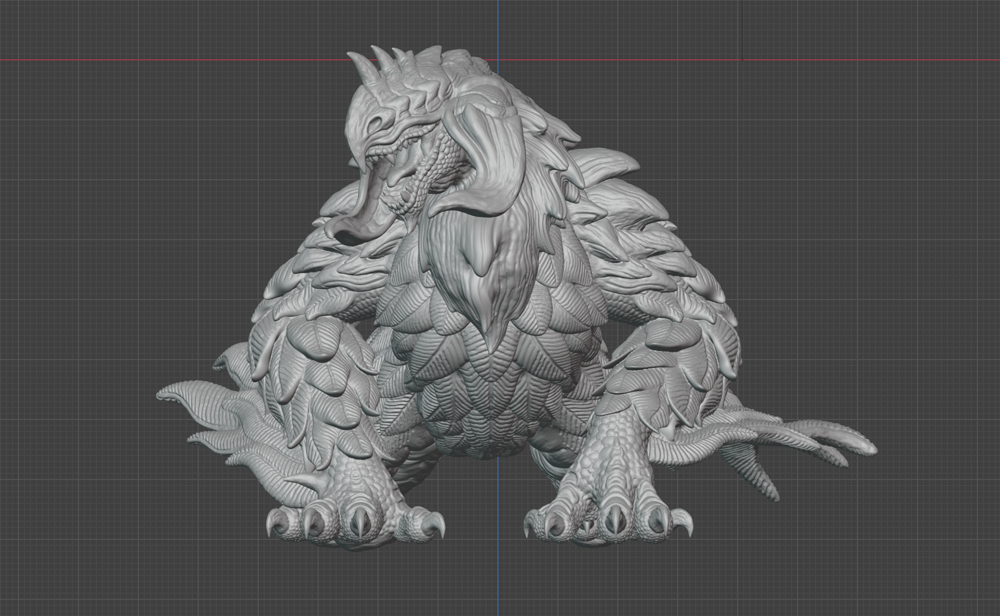
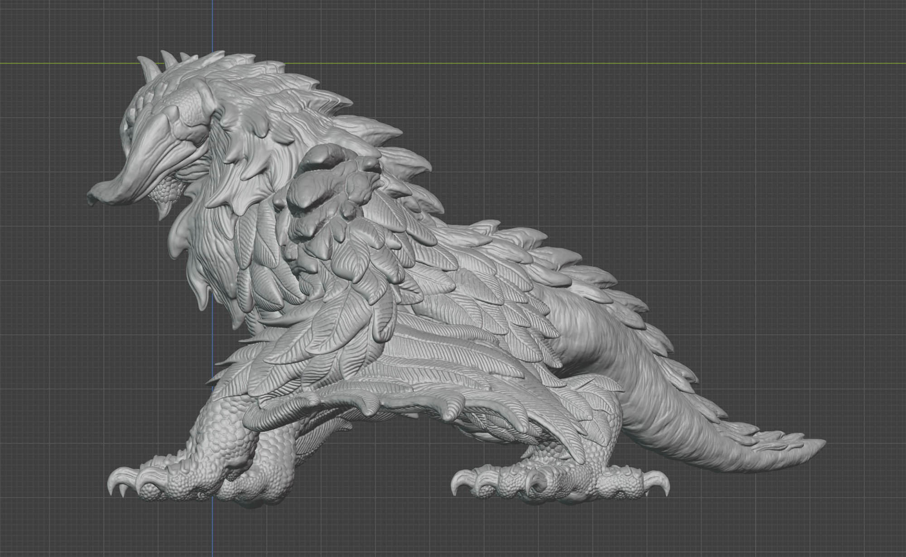
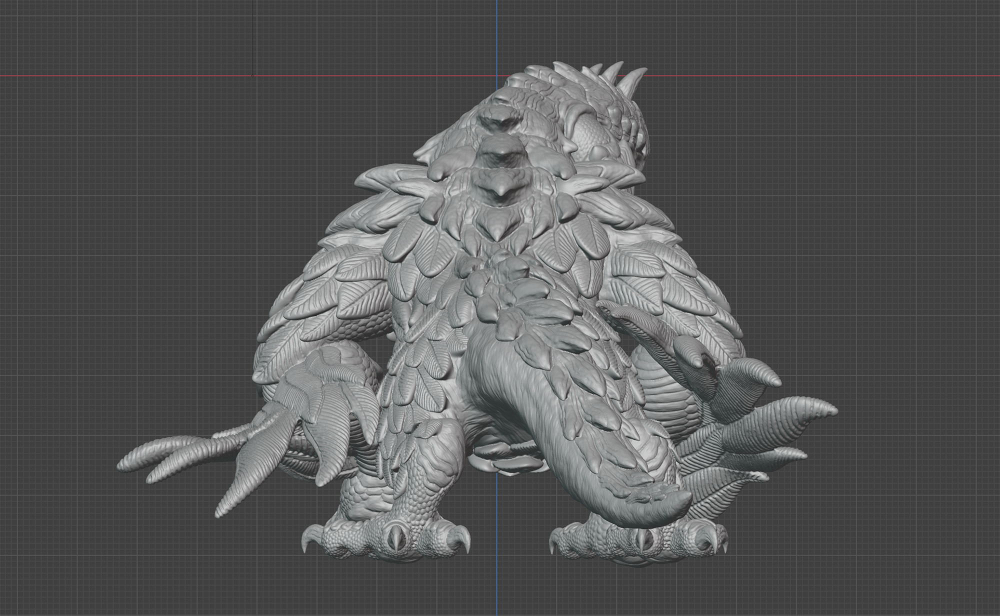
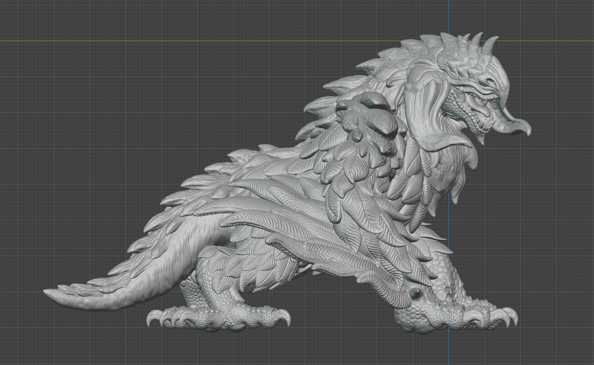

「 鳥竜の造形 / Bird Wyvern sculpture 」
デザイン・工夫
本作品は、猛禽類のような大型鳥類のシルエットをベースに、随所に爬虫類の質感を織り交ぜた、独自の進化を辿った生物としてデザインしました。
最大の特徴は、通常は翼である部位が強靭な前脚へと変貌を遂げている点にあります。
この前脚は、鷲や鷹の翼のような美しい羽を備えつつ、その骨格はワニやトカゲを彷彿とさせる力強い造形に仕上げ、陸上と上空の両方に適応した進化の過程を表現しました。
また、後脚は猛禽類特有の鋭さを活かしつつ、さらに「掴む」という機能に特化させることで、竜であり鳥でもあるという特異な存在感を強調しています。
空から大地へ、あるいは大地から空へと境界を越えていく、竜と鳥の狭間に位置する生命の鼓動や、そのダイナミックな進化の息吹を感じていただければ幸いです。




1/4
ホームへ戻る